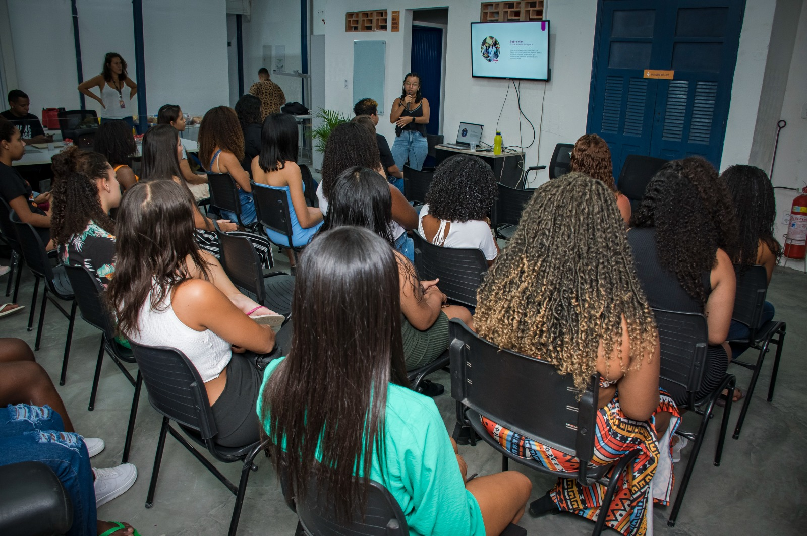
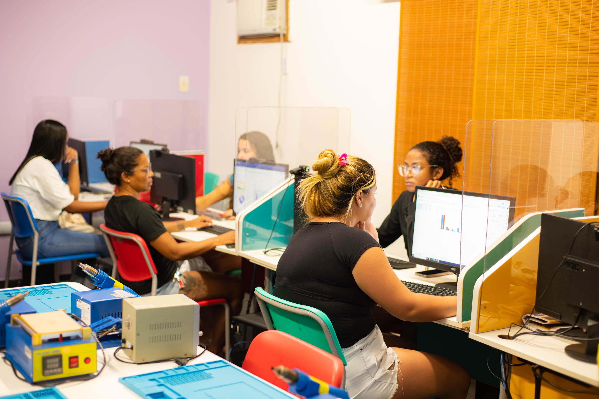
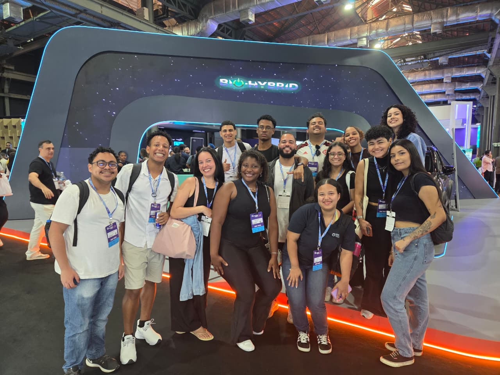
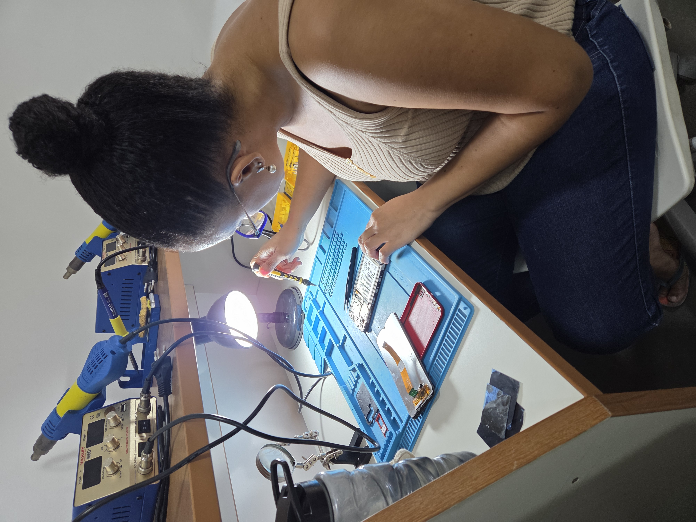

Bridging technology, education, and social impact through community-driven initiatives.
Co-founder & Senior Project Coordinator (Sep 2019 – Present) · Technology Educator (Aug 2017 – May 2023)
Leading digital inclusion and professional qualification within Maré, one of Rio’s largest favela complexes. I co-created and coordinate two flagship programs: Conectando (general public) and Conectando Mulheres (gender-focused initiative). These initiatives provide technology education — from basic digital literacy to programming, cybersecurity, AI workshops — and empower historically excluded communities.
Since 2017, the Conectando project has trained over 1,300+ students, transforming access to technology. In 2025 alone, under my coordination, we surpassed all targets: 253 beneficiaries, 23 cohorts, and 10 workshops on AI, fake news, and employability.
I founded and lead Conectando Mulheres, a strategic initiative dedicated to expanding women’s participation in the tech field. This gender-focused track creates safe, inclusive learning environments tailored to the specific needs and barriers faced by women from low-income communities. Through mentorship, peer networks, and applied tech courses, the program directly addresses the digital gender gap.650+ women trained through gender-focused initiatives since inception — fostering confidence, technical skills, and pathways to education and employment.
Program Leadership: Executive and pedagogical coordination of two major technology educational programs. Managed full cycle: strategic planning, educator supervision, partnership articulation, and monitoring of 23 concurrent cohorts in 2025. Key 2025 milestone: 253 participants, 10 workshops, integration with Nave em Órbita and engagement with tech ecosystem events (Rio Innovation Week, Web Summit).
Curriculum & Pedagogical Innovation: Designed inclusive curricula ranging from introductory computer skills to programming, web development, digital security, and emerging topics (AI, misinformation). Led ongoing educator training on methodologies, engagement strategies, and dropout reduction. Developed workshops and thematic modules that adapt to different literacy levels, ensuring accessibility in vulnerable territories.
With over 9 years of experience in digital inclusion, identified a critical gap: academic literature lacks granular, community-based data on the evolution of digital literacy and the determinants of dropout in low-income urban territories.
Digital Literacy Monitoring: Developed and continuously refined a multidimensional assessment tool that captures not only traditional computer proficiency but also the growing centrality of mobile-first internet usage, access to electronic devices, and the specific technological constraints that shape learning trajectories. This instrument now accounts for the role of smartphones in informal learning, disparities in device quality, and connectivity instability — factors often overlooked in standardized digital literacy indexes.
Dropout Analysis & Academic Contribution: Built one of the few localized datasets on attrition in technology courses within favela contexts through systematic categorization of dropout causes. Reveals complex intersections between structural barriers (transportation, work schedules, caregiving responsibilities) and pedagogical engagement.
Selected as a student volunteer for SCinet, the high-performance network built annually for Supercomputing (SC), the largest international conference in High Performance Computing. Participated twice, contributing to the deployment and operation of one of the most advanced temporary networks in the world.
Network Deployment (Fiber Team): Installed and managed fiber infrastructure across the convention center during build week, ensuring reliability and performance for large-scale HPC experiments and workflows. Work required precision, coordination, and collaboration within a globally distributed technical team.
Operations & Support (SCinet Help Desk): Provided technical support to conference participants, troubleshooting connectivity issues and repairing fiber links in real time during the event.
Technical Engagement: Participated in technical sessions and Birds of a Feather (BoF) meetings on HPC systems, deep learning, and networking, fostering connections with researchers and practitioners from leading international institutions.
Represented Brazil and the Federal University of Rio de Janeiro (UFRJ) in a highly competitive global environment focused on innovation, collaboration, and advanced computing systems.
Workshops, classes, and community-driven learning experiences from Conectando initiatives.

Workshop: AI & Fake News (2025)
Conectando Mulheres Cohort
Students at Rio Innovation Week
Digital Literacy Lab – Maré